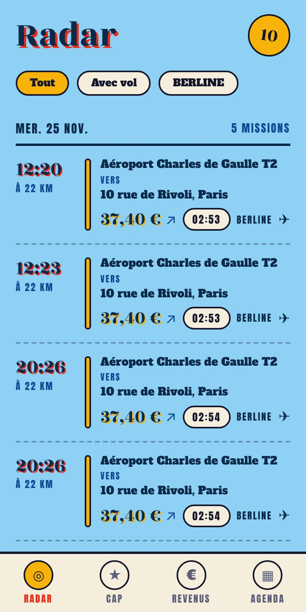

Chauffeurs et sociétés VTC
Rouler avec le moins de risque possible.
l’app des chauffeursUne application pensée à partir du métier : prix visible, règles claires, et jamais seul face à un problème. Vous restez indépendant ; nous apportons les courses et un cadre transparent.

Capture de la version de démonstration, avec des données fictives.
Ce que vous trouvez dans l’application
Des outils concrets pour votre journée.
Le prix avant d’accepter
Chaque mission affiche son prix. Le prix proposé monte quand la mission approche : vous voyez ce que vous touchez au moment où vous acceptez, et cette somme est celle que vous recevez.
Vos revenus, sans zone d’ombre
Net par jour, semaine, quinzaine ou mois : courses, indemnités d’annulation, pénalités déduites. Le rendement par heure ne compte que le temps de mission, de la mise en route à la fin de la course. Export CSV pour votre comptable.
Un revenu minimal par course
Nous complétons le prix pour que vous touchiez au moins 9 € net par course, en réduisant notre commission.
Les sauveteurs : l’entraide
Une panne, un malaise, un retard impossible à rattraper : vous pouvez faire reprendre votre mission par un chauffeur de confiance, en commençant par le plus proche du lieu de prise en charge. Le coût vous est annoncé avant que vous ne décidiez.
Un bouton en cas de problème
Danger, accident, panne, litige client ou contrôle routier : l’application enregistre l’heure et la position, et prévient l’équipe. Les numéros d’urgence (112, 17, 15, 18) sont à portée de doigt. Notre équipe n’est pas un service d’urgence.
Des échéances sous contrôle
Carte professionnelle, assurance, contrôle technique : des rappels avant l’expiration, pour ne pas être mis hors ligne par surprise.
Les règles, avant de rouler
Rendre une mission : un barème connu d’avance.
Si vous ne pouvez finalement pas assurer une mission, plus vous prévenez tôt, moins cela coûte. L’application affiche le coût exact avant que vous ne confirmiez.
| Quand vous rendez la mission | Pénalité |
|---|---|
| 48 h ou plus avant la prise en charge | 10 € |
| Entre 24 h et 48 h avant | 20 € |
| Entre 6 h et 24 h avant | 100 % de votre rémunération nette |
| Moins de 6 h avant | 150 % de votre rémunération nette |
Barème provisoire, valable pour la phase pilote. Avec un sauveteur, la pénalité est réduite de moitié (minimum 10 €). Des rendus répétés entraînent une suspension temporaire, puis un examen par une personne de l’équipe. Aucun « frais de dossier ».
Rejoindre CliCab
Ce qu’il vous faut.
- Carte professionnelle de conducteur VTC et permis de conduire valides
- Assurance professionnelle en cours de validité
- Pièce d’identité
- Soit votre propre inscription au registre des exploitants de VTC, soit un rattachement à une société de VTC inscrite
- Un véhicule conforme, avec carte grise et contrôle technique
Le véhicule
D’après la fiche officielle « Devenir chauffeur de VTC » de service-public.fr, un véhicule VTC a de 4 à 9 places, moins de 7 ans, au moins 4 portes, au moins 4,50 m de long et 1,70 m de large, et une puissance d’au moins 84 kW. Les hybrides et électriques sont dispensés de certaines conditions, et les véhicules de collection de la limite d’âge.
Ces critères sont à vérifier auprès des textes en vigueur ; la liste appliquée dans l’application fait foi.
Sociétés de VTC
Pilotez votre flotte, en règle.
Chauffeurs et véhicules
Ajoutez vos chauffeurs et vos véhicules, suspendez ou réactivez un chauffeur, suivez les documents manquants.
Performance
Ponctualité, taux d’acceptation et annulations, par chauffeur et par véhicule.
Relevé de paiements
Courses, indemnités et pénalités sur une période, avec un export CSV pour votre comptabilité.
Prêt à en parler ?
Les inscriptions ouvriront avec le pilote. Écrivez-nous votre ville, votre statut (indépendant ou société) et votre type de véhicule : nous vous recontactons.